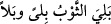
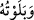
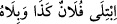
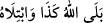

Ateşli sopayı uygun bir şekilde sallarsan
Ateş, göze upuzun bir çizgi gibi görünür
Bu sürenin uzun oluşu, Allah’ın yaratışının hızındandır
Yaratışın ne kadar hızlı olduğunu gösterir
Âsaf tahtı getirdi ve Süleyman (a.s.) onu gördü. Süleyman (a.s.) nakledilmesinden
dolayı arada bir fâsıla olmaksızın göz açıp kapayana kadar bir anda “(Süleyman) onu
(melikenin tahtını) yanı başına yerleşmiş” yanında hazır ve huzurunda sâbit “olarak
görünce:” nimeti şükürle karşılayarak “Bu,” yâni isteğimin gerçekleşmesi, bu kadar
kısa sürede tahtın gelmesi, benim cihetimden bir güç ve kuvvet olmaksızın onu sırf
Allah Teâlâ’nın fazlından görerek ve onun hakkını yerine getirmek sûretiyle “şükür mü
edeceğim, yoksa” yoksa nefsime bir pay çıkarmak ve bu lütfun gereklerini yerine
getirme konusunda kusurlu davranmak sûretiyle “nankörlük mü edeceğim diye beni
sınamak” denemek “üzere” hak etmediğim halde “Rabbimin” bana “(gösterdiği)
lütfundandır.” ihsânındandır “dedi.”
“ Elbise eskidi demektir. “ Sanki çok denediğimden dolayı onu
eskitmiş gibi onu denedim/sınadım, demektir.
“ (Falan şunu denedi/sınadı)” denildiği zaman bu iki hususu içerir:
Birincisi, o şeyin durumunun bilinmesi ve onun hakkında bilinmeyen şeylere vâkıf
olunması. İkincisi, o şeyin iyiliğinin ve kötülüğünün ortaya çıkması. Bu sözle iki
hususun kasdedildiği de olur, birisinin kasdedildiği de olur. “ (Allah şunu
denedi/sınadı)” denildiği zaman ise kasdedilen, o şeyin durumunun bilinmesi ve onun
hakkında bilinmeyen şeylere vâkıf olunması değil, ancak o şeyin iyiliğinin ve
kötülüğünün ortaya çıkmasıdır. Çünkü Allah Teâlâ bütün gaybları/gizlilikleri çok iyi
bilendir.
et-Te’vîlâtü’n-Necmiyye’de der ki: “İşâret etmektedir ki cinlerin cisimleri latif
olmasına rağmen, Süleyman (a.s.) meclisinde olduğu sürede böyle bir işi yapmaya
melekûtî kuvveti var idiyse de; kendisinde kitaptan bir ilim bulunan insanın cisminin
kesâfetine, ağırlığına ve insân olmasından dolayı zayıf olmasına rağmen rabbânî bir
gücü ve kuvveti vardır. O bunu kitab ile amel etmek sûretiyle kitabın ilminden elde
etmiştir. İşte o, cinlerin güç yetirdiğinden onu yapmaya daha muktedirdir. Bu velînin
tahtı getirme kerâmeti Süleyman (a.s.)’ın mûcizesinden olunca Süleyman (a.s.) şöyle
dedi: “Bu, şükürden âciz olduğumu görmek sûretiyle Allah’ın bana fazlından verdiği bu
nimete şükür mü edeceğim, yoksa nankörlük mü edeceğim diye beni sınamak üzere
Rabbimin (gösterdiği) lütfundandır.”
Katâde der ki: “Süleyman (a.s.) secdeden başını kaldırınca: “Âilem arasında duâ
edince duâsı kabul olunan kimseler yaratan Allah’a hamdolsun.” dedi.
Şükürler olsun buna yüzlerce kez